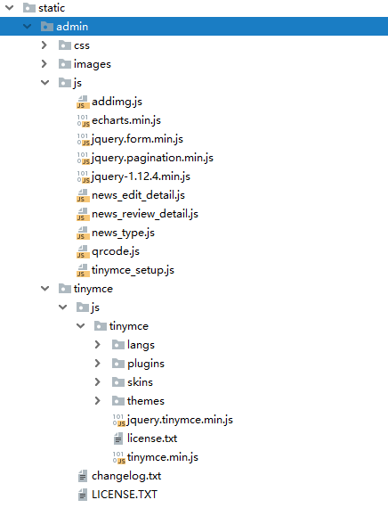
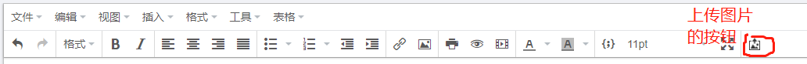
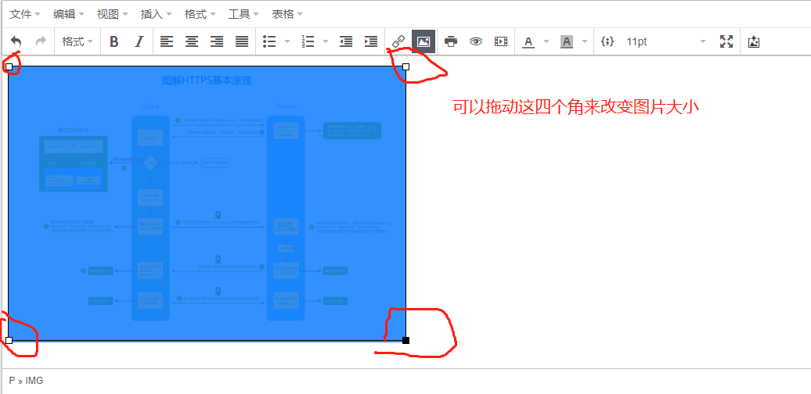

flask是一个用python编写的轻量级web框架,基于Werkzeug WSGI(WSGI: python的服务器网关接口)工具箱和Jinja2模板,因为它使用简单的核心，用extension增加其他功能。Flask没有默认使用的数据库、窗体验证工具。然而，Flask保留了扩增的弹性，可以用Flask-extension加入这些功能：ORM、窗体验证工具、文件上传、各种开放式身份验证技术。
flask安装: pip install flask
flask的教程网上有很多,我这里就不细说了
TinyMCE是一款易用、且功能强大的所见即所得的富文本编辑器。同类程序有：UEditor、Kindeditor、Simditor、CKEditor、wangEditor等等。
TinyMCE的优势：
官网及文档：www.tiny.cloud（右键）
官网下载：www.tiny.cloud/get-tiny/self-hosted/（右键）
Github：github.com/tinymce（右键）
注：此中文文档自TinyMCE v5开始编写，对v4不做介绍。本站所用版本为v5
以上转自tinymce中文文档
要如何在flask中插入tinymce呢,首先在官网下载好tinymce插件

将tinymce_setup.js放在static下的js文件里面,将解压出来的tinymce文件夹放在js文件夹的同级目录下
在jinja2模板里面首先引入
<script type="text/javascript" src="../../static/admin/js/jquery-1.12.4.min.js"></script>
<script src="../../static/admin/tinymce/js/tinymce/tinymce.min.js"></script>
<script src="../../static/admin/js/tinymce_setup.js"></script>这三个js文件,再将下面的div放在body里面
<div class="rich_wrap fl">
<input class="input_area" id="rich_content" name="content" value="{{ news.content }}"></input>
</div>这个js是定义富文本编辑器的宽高语言等<script>
$(function() {
tinymce.init({
//选择class为content的标签作为编辑器
selector: '#rich_content',
//方向从左到右
directionality: 'ltr',
//语言选择中文
language: 'zh_CN',
//高度为400
height: 400,
width: '100%',
//按tab不换行
nonbreaking_force_tab: true,
readonly: 1
});
})
</script>修改tinymce_setup.js
imageupload_url: "/upload/"这个是在文本编辑是插入图片的接口,同理,也就是说你需要一个接口来保存插入的图片
@app.route('/upload/', methods=['GET', 'POST'])
def upload_file():
if request.method == 'POST':
img = request.files.get('file')
res = requests.post(url='http://xx.xx.xx.xx/v1/qiniu/upload', files={'file': img}) # 将插入的图片上传到七牛云上
result = json.loads(res.text)
imgsrc = result['data']['url']
print(imgsrc)
mes = {}
mes['path'] = imgsrc # 将图片的地址封装在字典里,键为path,这样图片就能在富文本中显示了
mes['error'] = False
return jsonify(mes)也可以将图片下载到本地,具体的代码就不往上写了,基本就是将图片接收到,以二进制的方式写入图片到本地就OK
至此,就可以在你的项目中使用富文本编辑器了


以上就是本人对flask中使用富文本编辑器的一些理解和使用小结，不对的地方还请指出。
原创文章，转载请说明出处